エアコンの恩恵 [梅吉]
夜の気温も25℃以上の熱帯夜が続き本格的に暑くなって来た大阪です。
３日ほど前からリビングのエアコンは梅吉のためにも一日中つけっぱなし。
冷やしすぎも良くないので日中のリビングの温度は大体29〜30℃くらいになる様な設定。
動いて汗をかくくらいが我が家の室内の適温です。
通常生活している範囲の温度が29〜30℃ということは人間の頭より上の場所は
もっと温度が高いはずなのですが・・・
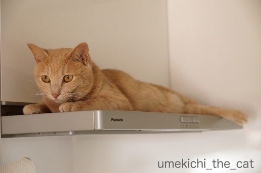
暑くても上を目指す漢、梅吉。
お湯を沸かしたり調理をしている時でもレンジフードの上に陣取ります。
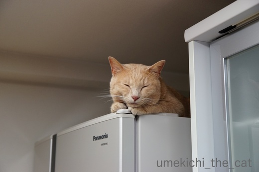
冷蔵庫の上も好き。（冬限定かと思っていたら違った・・・）
冷蔵庫の上ってモーターみたいの付いているから熱いんですけど・・・・・
この写真は満足そうなお顔ですが、魂が抜けた様にトオイメの時も。
正直暑いんじゃないですか？(^▽^;)
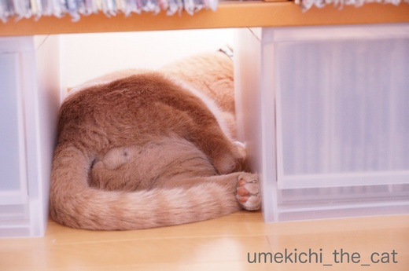
日当たりの良い窓の下も最近ブームの場所。
エアコン直下すぎて冷気は届かずしかも狭い。
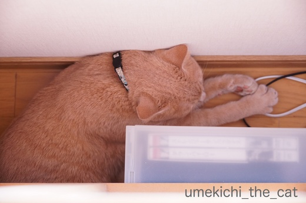
先ほどの写真、上から頭部分を見るとこんな感じです。
体勢にも無理がありあり、暑い＆狭いで苦行の様ですww
とことん自分を追い込んで一体どうするつもりでしょうか・・・・・
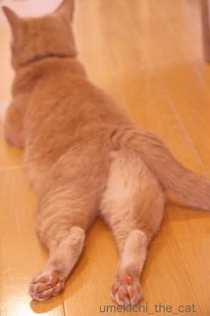
そんな漢、梅吉も暑さMAXになるとエアコンの冷気はあまり届きませんが
ちょっと涼しい廊下で cool down。放熱ポイントはあちの肉球の様です。
両肉球ともにきっちり上向きーーーー！Ｏ(≧▽≦)Ｏ
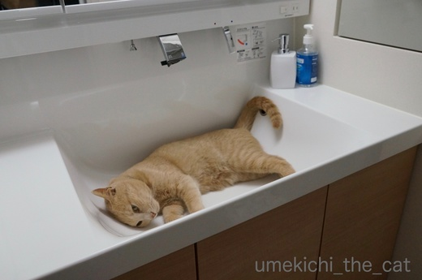
さらに涼を求める時は洗面ボールへgo！
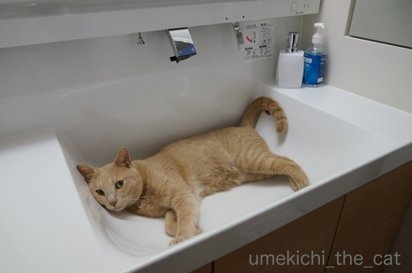
![[猫]](https://blog.ss-blog.jp/_images_e/101.gif) あせかくのもたいせつや。せやけどひやす のもひつようやで。
あせかくのもたいせつや。せやけどひやす のもひつようやで。
と、涼をとるにもナチュラルな方法であまりエアコンの恩恵を受けようとは思っていない様です。
エアコンつけっぱなしは梅吉のための様なものなのに・・・
飼い主が思うよりも寒がりなのかな？
冷風を浴び続けるよりも健康的なんですけどね＾＾
でも朝の洗面ボール占拠はやめて〜。
 ↑ガブッと一押し↑
↑ガブッと一押し↑
３日ほど前からリビングのエアコンは梅吉のためにも一日中つけっぱなし。
冷やしすぎも良くないので日中のリビングの温度は大体29〜30℃くらいになる様な設定。
動いて汗をかくくらいが我が家の室内の適温です。
通常生活している範囲の温度が29〜30℃ということは人間の頭より上の場所は
もっと温度が高いはずなのですが・・・
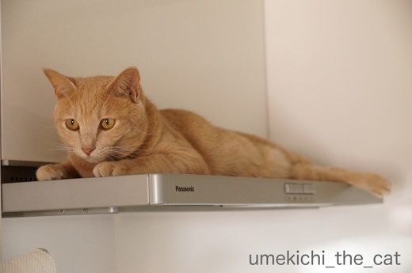
暑くても上を目指す漢、梅吉。
お湯を沸かしたり調理をしている時でもレンジフードの上に陣取ります。
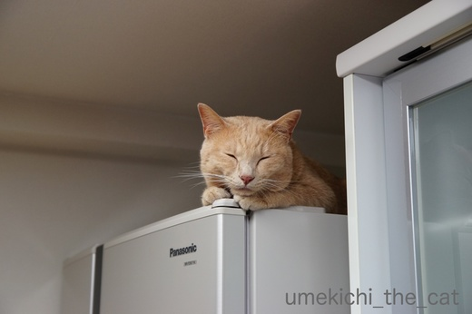
冷蔵庫の上も好き。（冬限定かと思っていたら違った・・・）
冷蔵庫の上ってモーターみたいの付いているから熱いんですけど・・・・・
この写真は満足そうなお顔ですが、魂が抜けた様にトオイメの時も。
正直暑いんじゃないですか？(^▽^;)
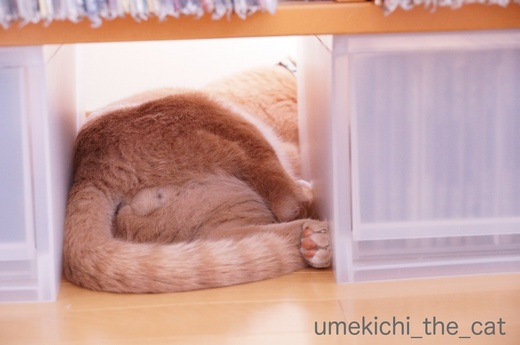
日当たりの良い窓の下も最近ブームの場所。
エアコン直下すぎて冷気は届かずしかも狭い。
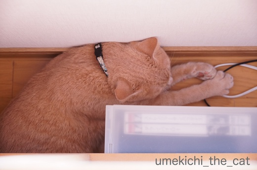
先ほどの写真、上から頭部分を見るとこんな感じです。
体勢にも無理がありあり、暑い＆狭いで苦行の様ですww
とことん自分を追い込んで一体どうするつもりでしょうか・・・・・
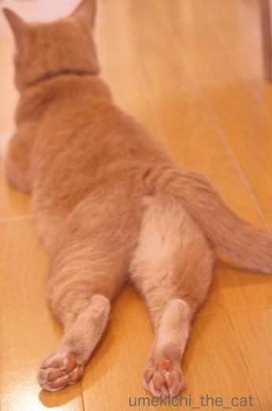
そんな漢、梅吉も暑さMAXになるとエアコンの冷気はあまり届きませんが
ちょっと涼しい廊下で cool down。放熱ポイントはあちの肉球の様です。
両肉球ともにきっちり上向きーーーー！Ｏ(≧▽≦)Ｏ
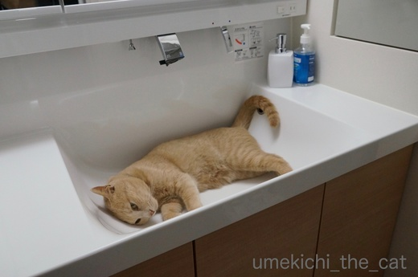
さらに涼を求める時は洗面ボールへgo！
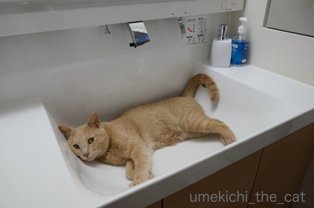
と、涼をとるにもナチュラルな方法であまりエアコンの恩恵を受けようとは思っていない様です。
エアコンつけっぱなしは梅吉のための様なものなのに・・・
飼い主が思うよりも寒がりなのかな？
冷風を浴び続けるよりも健康的なんですけどね＾＾
でも朝の洗面ボール占拠はやめて〜。

カフェオレ色の梅吉

梅吉 2023年8月10日 永眠


梅吉と出会った譲渡会

犬猫の理由なき殺処分ゼロ
妄想広告
UMEKICHI 光

爆発的に早い！
時々攻撃的！
Thanks to Mr.Boss365
爆発的に早い！
時々攻撃的！
Thanks to Mr.Boss365

うちも一日中お猫様のためにリビングのエアコンを２７～２９℃で
設定してますが、家に帰るとなぜかエアコンの冷気が直接来ない
（廊下のドアを閉めてるため）寝室や玄関前に落ちてます(*_*)
勿体ないので「エアコンＯＦＦにしようかな？」とも思いますが、
もし熱中症になったら・・・と考えると絶対にＯＦＦは無理(>_<)
毎年悩みながら涼しくなるのを心待ちしてますｗ
by ニッキー (2017-07-18 12:35)
わが家では考えられない温度設定です（笑
なのでＬｅａと私は快適♪ ケンは震えております(;^_^A
もっちりおチリに投げ出した足が
可愛くてたまりません(#^.^#)
by きぃ (2017-07-18 13:44)
猫の快適温度は人間よりずっと高いんですよね。うちも室温は28度くらい。
私も投げたしたあんよ写真のもっちり感がたまりまへん。
by zombiekong (2017-07-18 14:40)
3枚目の写真はタマタマちゃんが見えるような？(≧∇≦)
気のせいかな(ﾉ´∀｀*)
暑い日が続きますよね。
梅さんの足投げ出しの態勢、これもまた可愛いですね。
後ろから掴みたくなる（ﾌﾋﾋｗ
by muku (2017-07-18 16:32)
やっぱり洗面台は冷たいから好きなのかな？
by じゅらまろ (2017-07-18 16:52)
猫を可愛がる者に悪はおらず。
by yukio (2017-07-18 16:52)
猫は快適な場所を見つける天才だけど・・・
んっ？そこでいいの？ってこともよくありますよね。
ソファーカバーの間に潜り込んで寝ていたり、廊下で行き倒れてたりｗ
梅吉くんも冷やしたりぬくったり。きちんと体温調節してますね。
放熱中の肉きうが～～～(#^^#)
家は寒いくらいにしておかないとひなとまりもがぜぇぜぇはぁはぁ・・・。
なので私はひざ掛けが手放せません。
美容院みたいに首だけ出してることもあります。今もだった・・・＞＜
by emi (2017-07-18 16:56)
なぜか暑い所ばかりいたりしますよね～後ろ足の姿が萌えますね。
by みぃにゃん (2017-07-18 19:44)
ウチのも暑くても窓をあけろと要求します。
暑いので早く閉めてエアコンつけたいのですが、30℃ぐらいまでは窓辺で自然の風が入ってくる方がいいみたいです。
リビングは27～28℃設定。そこで寝る時もあれば、暑い玄関先で行き倒れてることもあり(^▽^;)
こてつなりに移動して体温調節しているのかもしれません。
蒸し暑い大阪、やっぱり熱中症が怖いのでエアコンは切れません。
by ゆきち (2017-07-18 19:45)
梅吉さん、ユニークな場所選んでますね～♪
上向き肉球で熱を発散？たまりませんね＾＾
‥うちも私の部屋は猫のためにずっと冷房してましたが、隣の部屋に行ってることが多かったです‥冷風が当たるのが嫌だったみたい？
でも34度とかになって限度超えると避難してくるので、留守でも切るわけには行かず＾＾；
by sana (2017-07-18 19:58)
梅吉さん、足がたくましいですね。^^;
うちのヤツも、長毛種のくせにエアコンの効いた部屋にはあまりいません。
洗面所でくつろぐ梅吉さん、頭いいなぁ。
見ているだけでも涼しげです。^^)
by yes_hama (2017-07-18 20:43)
いろんな場所でくつろぐ梅吉君。エル字型になって苦行をする梅吉君。ちょっと開き気味の前足…写真を撮るのも大変そうです。
後ろからでーんと立派な太ももからのにくきう…後ろから思い切りニギニギしつつ引っ張りたい。
洗面ボウル、梅吉君のためにあるようなジャストサイズですね。
台所の流しで歯磨きするしかないですね´д` ;
by BillK-ko (2017-07-18 21:21)
ちぃさん家のレンジフードはスマートで羨ましい。
我が家のは黒くて大きくて、ホコリがすぐつきます。
我が家の冷蔵庫はモーターが下にあるので、
冷蔵庫の上は冷たかったです（確認してきた〜ww）
で、肘をついた梅吉さんの、寝転んだ後ろ姿のキュートなこと。
太もものモフモフを触ってみた〜い。
by kiki (2017-07-18 21:32)
洗面ボールが梅吉さんにぴったりのサイズ。
これは自分のためにあるんだと思っているんじゃないですか(^^♪
by riverwalk (2017-07-18 22:32)
梅吉君、自分好みの場所を見つけるのが上手！
とくに、洗面台のボウルは、お見事です（笑）
これ以上ない位のフィット感ですね！
by うめむす (2017-07-18 23:21)
うちの子達も上の方に上がってますね。
冷蔵庫の上は、なぜか人気があります＾＾
by ぽちの輔 (2017-07-19 07:08)
暑い日に「こ、こんなところにー！」潜り込んでいる時ありますね。
廊下でクールダウンの無防備な後姿が、なんともキャワイイ♪
by Ginger (2017-07-19 13:51)
そう！上の方が暑いのに上に登ります。現在も２匹はキャットタワーの一番上を陣取ってます!(^^)!
by palpal (2017-07-19 15:15)
ちょっと前の記事への反応ｗ
ぺったらこい、言います言います(笑)
うちは、あおがぺたーんと座ってるとき「ぺったらっこちゃ～～ん」って呼んでますｗ
あとは、ちんまり座ってるとき「おっちゃんこしてるのねー」とか^^
あっちゃこっちゃで寝てる梅吉君、修行してるのね(笑)
でも、朝の洗面ボール占拠は反則よね^m^
by リュカ (2017-07-19 15:28)
もっちりおチリ、投げ出した足、肉球たまりませんな( ´艸｀)
うちは(特に旦那が）エアコンあまり好きじゃないのと
NYは本当に暑くてエアコンないといられないのはひと夏で
数えるくらいなんです（暑がりの人はエアコン必須かもですが）。
動くと暑いですが、動かなければ扇風機で十分過ごせます。
ちくわも全然平気そうですが、ちくわの為に窓際に冷凍庫を
置いてあげ、蓋はヒンヤリしているし、窓から良い風が
吹いている特等席があります＾＾
でも、結構暑そうなところにもいるんですよね～。
by Moon (2017-07-19 17:19)
梅吉先生は減量を目指しているのでは？
サウナ風呂の熱いを我慢して、その後冷水にドボン！
男を感じます。^ ^
by KENT0mg (2017-07-19 20:05)
梅吉さん、自由に生きていらっしゃいますね。
2枚目の表情と4枚目の投げ出したおみ足が
たまりませ～ん！冷蔵庫の上や部屋の隅など、
モップが届きにくいところを天然モップで
掃除してくれてたあと、洗面所で丸ごと洗い？
by うっかりくま (2017-07-19 21:59)
ニッキーさん＞同じくお猫様がどんなに暑い部屋に篭ろうと
絶対にエアコンオフには出来ません！
もしオフなんかにしたら外出先で「大丈夫だろうか」と心配でならず
用事もそこそこに帰宅してしまい、もしも熱中症にでもなろうものなら
心労で社会生活がまともに送れなくなってしまいそうです(⌒_⌒;
きぃさん＞Leaちゃんは暑いの苦手ですものね。
生まれて初めて迎える夏だし暑さ対策は万全でOK!
ケンさんには冬と同じ服装＆布団にしていただきましょう＾＾
zombiekongさん＞札幌で猫を飼っている時は夏の暑さ対策なんて必要なかったので
大阪でのにゃんこの温度管理はまだ手探り状態です。
にゃんこは暑さには強いな、とは思っていましたが30℃越えの部屋にこもって
平気で寝ているのはビックりでした^^;
mukuさん＞おお！mukuさん攻めて来ますね！踏み込んで来ますね！！
でもそんなmukuさんが好きですよ〜＾＾
はい。おっしゃる通りタマタマ（空）ちゃんで〜す。かわいいでしょー(≧艸≦)
ネコ飼いのごとき高ネコ変態度、はなまるを差し上げます！
じゅらまろさん＞ひんやりしてジャストフィットなんですよヾ(*ΦωΦ)ﾉ
yukioさん＞コメントいただいてありがとうございます♪
「猫を可愛がる」という点においては
福者どころか聖人に認定されるかもしれません＾＾
emiさん＞わんちゃんはにゃんこよりも暑がりですものね〜。
まんまるひなちゃんとまりもちゃんの体調管理のためなら
エアコン代なんて気にしてられませんよね＾＾
emiさんは冷やさないようにしっかり温めてくださいね〜。
冷蔵庫の上、いいかも、ですよ〜(≧▽≦)
みぃにゃんさん＞そうそう( ･̆ˍ･̆ )親のエアコン心、猫知らずですww
ゆきちさん＞今後3ヶ月程の電気代はちょっとびっくりしちゃいますが
梅吉のためなら必要経費、と思っております。
お猫様が元気でいてくれないとこちらの神経が参ってしまいますよね(^_－)☆
梅吉も換気のために開けた窓辺で熱風と直射日光に当たって
くったりしていることがよくあります。
びっくりして体を触るとほっかほかで大丈夫なの！？とあせりますが
本にゃんいたってご機嫌です^^;
sanaさん＞「そんなとこで何してるの？」という場所ばかり選んでいます^^;
あまりに意表をつく場所にいるので姿を見つけられず探し回っていると
「なにしてんや・・・・・」と冷たい目で見られることもしょっちゅうですww
エアコンはやっぱり必須ですよねー＾＾
yes_hamaさん＞あほっさで毎日駆け回って鍛えているので
なかなかの太ももなんですよ〜＾＾
むっちむちの手触りもなかなかですww
洗面ボールは遊びで入っているうちに「ひやっこい」ということに気づいた様です。
結構学習能力あります！
BillK-koさん＞時に脚立に乗り、爪先立ちになり、這いつくばり・・・・・
「巨匠イワゴーの苦労はこんなものじゃないわ！」と
自分に喝を入れて頑張って写真撮っていますよー(^_－)☆
梅吉は気にいるとどんなに撤去してもおきあがりこぼしの様に
洗面ボールに戻って来るので大変です・・・・・
はい。台所使っています(꒦ິ⌑꒦ີ)
kikiさん＞そう！レンジフードは商品名がズバリ
「スマートフード」なんですよ＾＾手入れも簡単。
梅吉の為に頻繁に掃除しなければいけないので助かってま〜す＾＾
太ももはモフモフ＆むちむち、ぴちぴちですＯ(≧▽≦)Ｏ
riverwalkさん＞お猫様なので
「すべてのものは わしのもの」と思っているかもしれません(≧▽≦)
うめむすさん＞洗面ボウルのおかげで猫用アルミプレートとか
ひえひえマットとか買わなくても良さそうです＾＾
日中誰も使っていない時にもどんどん洗面ボールを使えば良いのに
朝と夜、人間が使っている時に好んで使うのがなんだかな・・です(^▽^;)
ぽちの輔さん＞暑いのにやっぱり高いところですか・・・・
冷蔵庫、人間の次に使用頻度が高いのはにゃんこかもしれませんね！？
全国調査してみたい＾＾
Gingerさん＞暑いのはある程度まで平気なんでしょうね〜。
でもやっぱり心配になっちゃう猫親心です＾＾
クールダウンのポーズ、のび〜〜っと伸びてズルズルのあの形になりました(≧艸≦)
動画も撮りたかった〜(≧艸≦)(≧艸≦)
palpalさん＞高いところが好きなのか。暑いところが好きなのか・・・・・
高くて暑いところが好きなんだー！！
リュカさん＞「ぺったらこい」は平らでちょっと潰れた感じで・・・
標準語では言い表せない微妙なニュアンスを含んでますよね(≧▽≦)
おっちゃんこ、も言うよねー for 小さくてかわいいもの(^_－)☆
洗面ボールも好きだけどトイレの貯水タンクの上の水出るところも好きなのよ。
以前あんまりよけないから水出してやったらびしょびしょになりながら
平気で寝ていたわww
で、水は梅吉の体を伝ってトイレの床を水浸しに(꒦ິ⌑꒦ີ)負けた・・・・・
Moonさん＞NYは意外に涼しいんですね〜。
でもアメリカ人って暑がりそうなイメージなんですけど。
大阪で観光しているアメリカ人と思しき人は冬でも結構半袖ww
南部出身者(≧艸≦)？
窓辺で良い風を受けるちくわさん・・・・・
近い将来その背景がエンパイヤステートビルになりますように(^_－)☆
KENT0mgさん＞毛皮脱いだら実は汗ダラダラかもしれません＾＾
なんだか減量に励むボクサーみたい！漢、梅吉ですからね〜(≧艸≦)
うっかりくまさん＞「あー梅吉そのすみの方！」と
天然モップを自在に操って見たいものですが
根っからの下僕体質なので「梅吉さんを煩わせてはいけない！」と
率先して掃除しちゃいます（梅吉の行くところだけ）(^▽^;)
出来た下僕でしょうww
by ちぃ (2017-07-19 22:42)